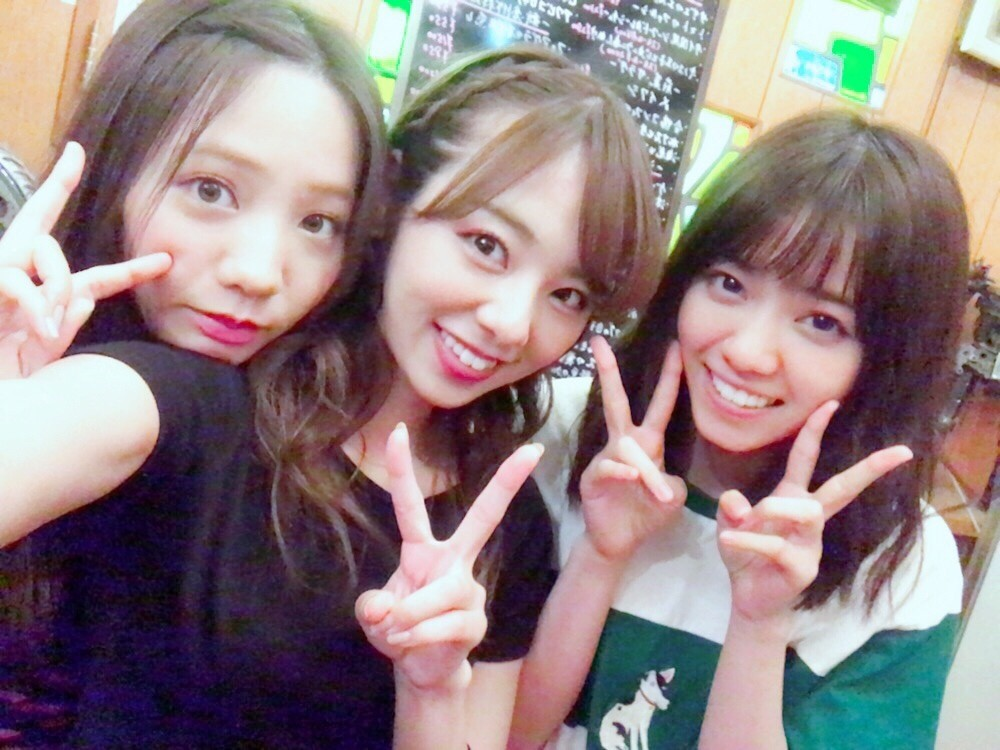
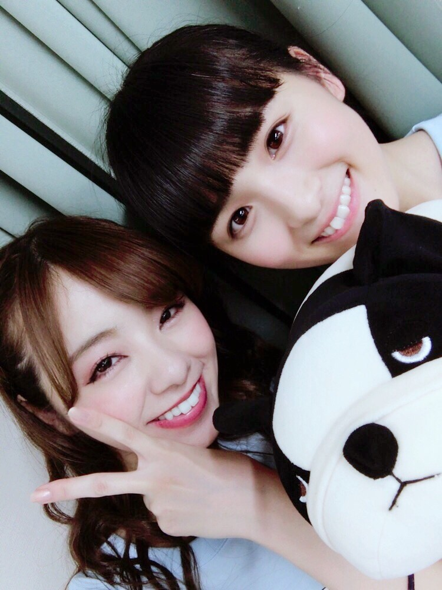

お疲れ様です♡
1234Go‼︎ Rottyー‼︎
ろってぃーです(*´ω`*)
ぁ 上のURLはヤングギターで毎月動画も配信しているので，そちらの方チェックしてして頂けたらと思い載せました。
宜しくお願いします♪

そして、、
ツアー大阪公演も無事終了致しました!
大阪ならではのパワーを感じましたね、、、 Live前のろってぃーコールも特に3日目ですかね、裏まで聞こえてきました♡
本当にありがとうございます。
毎度毎度Live前に皆様から喝を入れてもらってますね。。
Live後のご飯にも勿論参加してきました。 でもすぐ疲れ果ててしまう私は途中から七瀬と能條の間で寝たり起きたり天井を眺めてみたり、笑
でも大阪にいた3日間は毎日551の豚まんを食べたし，タコ焼き，イカ焼き，カツサンド，リクローおじさん，堂島ロール，クラブハリエ，みっくちゅじゅーちゅ♡ 何もかも頂いちゃいましたよ。
やばいですよね。
寝る前は白バラコーヒー。
本当美味しい物ばっかなんだもん。
それに桃子かわいいし。。。急 笑

常に犬抱えてるんですけど。
たまごっちも持ってるんですけど。
3期生が入ってから妹が欲しいと感じています♪。。
私が高校3年生の時は、、バレッタとか気づいたら片想いの時だから、、
うん。犬もたまごっちも持ち歩いてなかったなぁ～(*´ω`*)
不思議や桃子たん。
そしてそしてなんですけど、私Live中にとある宣言をしまして、、
『随時3期生のエピソード等をblogにかいてく』と。
がんばりまーーす♡
ぁー‼︎ そーだーー。。。
今日と明日は名古屋だぁぁ。
手羽先味噌カツ小倉♡
ではでは～(*´ω`*)